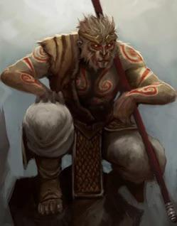

Playable Races > Apekin
Also known as Khong in their native tongue, or Irdani. Beastkin that once ruled a mighty thalassocracy that spanned the whole South Seas. They struggle to navigate a world that sees them as either villains or exotic troublemakers. After the collapse of their empire, they survive largely in ruins and deep jungles on the Thousand Isles where the new nation of Ryon wouldn't be bothered to look. They have a long and respectable history of spirituality.
Simian Aptitude: Apekin can use their prehensile tail as a second off-hand that won't ever carry more than Light items.
Racials: +1 DEX +1 CON -1 WIS +4 Acrobacy
Health: 1d9 health points per level.
Origin: Apekin live in small, scattered tribes around the thick jungles of the tropical islands in the Thousand Isles region.